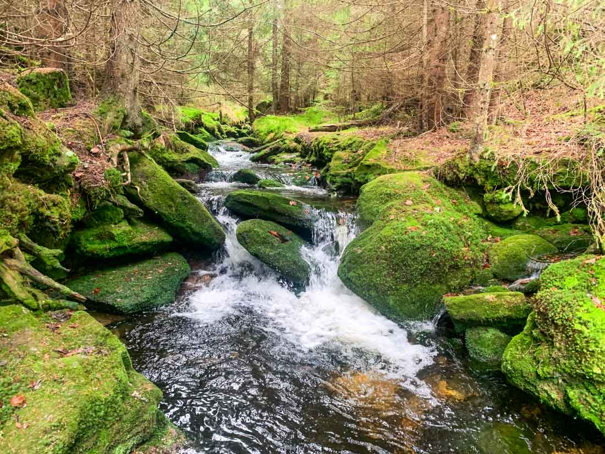
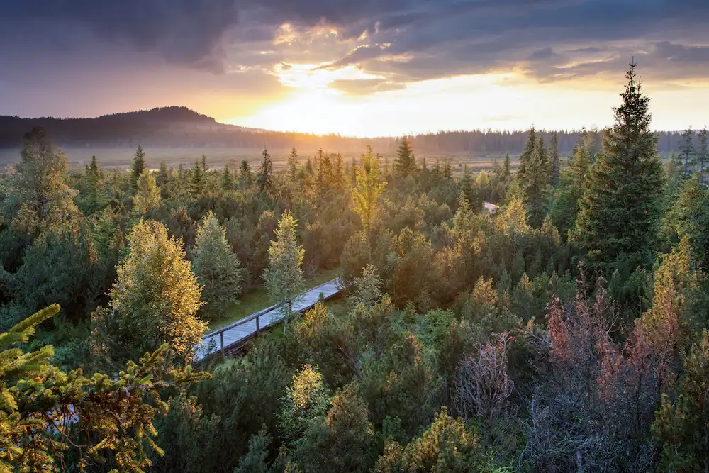
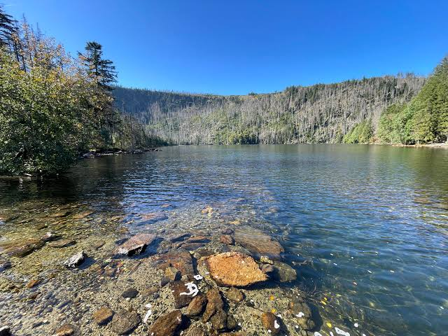
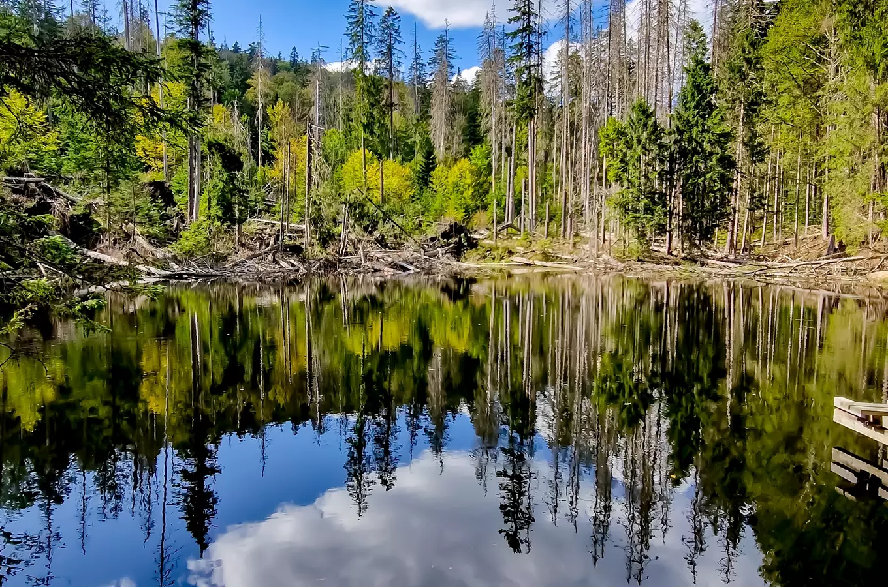

A vast national park in southwestern Czechia, known for its deep forests, glacial lakes, mountain landscapes and peaceful nature.
Šumava National Park is located along the border with Germany and Austria. Its landscape includes forests, mountain meadows, peat bogs and beautiful lakes.
The region is popular for hiking, cycling and exploring nature. Its quiet forests and diverse landscapes make Šumava one of the most important natural areas in Czechia.

Černé jezero, also known as the Black Lake, is the largest natural lake in Czechia. It lies among the forests of Šumava near the German border.
The lake is surrounded by steep forested slopes and offers a peaceful atmosphere. It is a popular destination for visitors exploring the national park.

Boubín Forest is one of the best-known protected forest areas in Šumava. It is famous for its old trees and its rich natural environment.
Walking trails lead through the surrounding forest, allowing visitors to discover the beauty of the Šumava landscape and its wildlife.

Šumava offers many opportunities for outdoor activities, including hiking, cycling and exploring lakes, forests and mountain villages. Visitors can discover places such as Modrava, Kvilda and the surrounding natural landscapes.
The combination of peaceful forests, beautiful lakes and mountain scenery makes Šumava a memorable destination for anyone who enjoys nature.